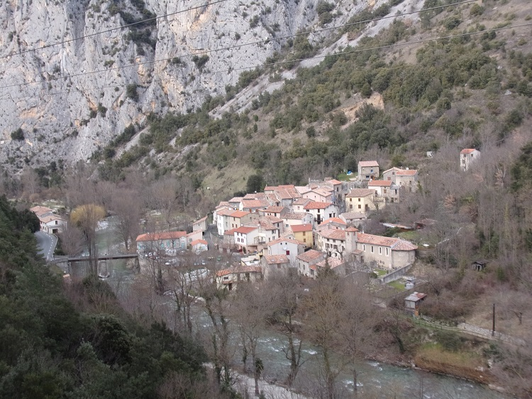

Conseil municipal élu le 15 mars 2020
Election du maire et des adjoints (23 mai 2020)
Dossier départemental des risques majeurs pour la commune de St-Martin du 30 Octobre 2017 (TIM - Transmission d'Informations au Maire)

Plan avec les noms des rues de Saint Martin Lys

carte postale double : Notice Saint Martin et pont de la gare1

Le panneau signalétique offert par "Le pays d'accueil touristique des Pyrénées cathares" sur la place de l'ancienne école
Le détail du panneau est repris dans les pages Randonnées, Abbaye, Félix Armand et Pont d'Alies

Carte Postale Ancienne - Vue aval du village2

Carte Postale Ancienne - Vue amont du village2

Carte Postale Ancienne - Vue élargie amont du village4

Carte Postale Ancienne - Vue du pont et de la place de l'école4
Cette carte montre que l'Aude passait à droite du pillier du pont il n'y a pas si longtemps. Cette photo nous donne un aperçu de ma maison avant la peinture murale publicitaire. Il est aussi possible de deviner la grotte de Félix Amand tout à gauche de la photo : Pourrait être interessant d'avoir l'original...

Photo publiée dans le Monde Illustré en 19043
Cette photo a été reprise en carte postale (voir la page sur le chemin de halage)

Garrigue et galerie au bord de la rivière. - Saint-Martin-Lys (Aude)
Photo publiée par la Revue des eaux et forêts en juillet 1941 (gallica.bnf.fr)

Photo année 70 - niveau pont rive gauche2

Photo année 70 - le village sous la neige2
Le village, vu de la rive gauche en aval, en automne
Aurait été mieux si les peupliers avaient été élagués...
la montagne en fond est le bout du cap de fer, le chemin de Lapradelle passait juste en son sommet par le "pas du Taïchou"
Une croix a longtemps surplombé le village de la-haut, celle de Marinette, du bûcheron et de l'ours
le village vu de la via ferrata
Le village, vu de la rive gauche en amont (vue générale et vue rive droite)
1937: Vidéo sur l'Aude, montrant Saint Martin Lys - à partir de 4mn 26 de la vidéo
proposée par "Mémoire Filmique Pyrénées-méditéranée"
Voir si je peux rajouter les photos des calendriers passés ? (action à faire)

Prise devant ma maison avant la rénovation faite par mes grands parents ? Nous pouvons voir ma grand mère, peut-être ma mère à droite ? certaines personnes habitant encore le village.

François Chaynes était un jeune homme joyeux, toujours chantant quand il allait travailler à la gare de St Martin pour le chemin de fer.
Aussi quand ses collègues l'ont vu un jour arriver à son boulot en tirant la gueule, ils s'en sont de suite étonnés.
- Mais que t'arrive-t-il donc aujourd'hui ?
- la façade de ma maison s'est écroulée cette nuit ?
- Quoi, il y a eu des morts, des blessés ?
- Non, la façade s'est affaissée d'un bloc, elle est tombée dans la rue de nuit quand personne n'était plus dehors. Et comme les poutres sont fixés sur les autres murs, les planchers sont restés en place. Notre lit est à l'air libre, mais toujours en place.
- Pas très discret, vous avez pensé à mettre un rideau pour votre intimité ?
Et autre plaisanterie plus grivoises.
Mais cette équipe était formée de bons camarades qui se sont portés volontaires pour aider à rebâtir le mur le jour même et effacer cet accident à la vue de tous.
(Anecdote transmise par la nièce de François et son mari)
1site de la Société d'Etudes Scientifiques de l'Aude
2Cartes postales et Photos proposées par Gérard Gosselin
3le monde illustré 1904 page 193 Gallica Bibliothèque nationale de France, département Philosophie, histoire, sciences de l'homme, FOL-LC2-2943
4Cartes postales proposées par Thierry Meynier sur son facebook - copiées avec son autorisation